dat <- J15S5004 項目反応理論
この章では，項目反応理論（IRT）の各モデルとその可視化について紹介します。
4.1 IRTの実行
サンプルデータJ15S500（15項目・500人の二値データ）を使用します。
4.1.1 IRT関数
IRT()関数は，model引数で2PLM（デフォルト），3PLM，4PLMを指定できます。
result <- IRT(dat, verbose = FALSE)No ID column detected. All columns treated as response data. Sequential IDs (Student1, Student2, ...) were generated. Use id= parameter to specify the ID column explicitly.
No ID column detected. All columns treated as response data. Sequential IDs (Student1, Student2, ...) were generated. Use id= parameter to specify the ID column explicitly.resultItem Parameters
slope location PSD(slope) PSD(location)
Item01 0.698 -1.683 0.1093 0.266
Item02 0.810 -1.552 0.1166 0.221
Item03 0.559 -1.838 0.0988 0.338
Item04 1.416 -1.178 0.1569 0.113
Item05 0.681 -2.242 0.1152 0.360
Item06 0.997 -2.162 0.1499 0.273
Item07 1.084 -1.039 0.1281 0.130
Item08 0.694 -0.558 0.1002 0.153
Item09 0.347 1.630 0.0766 0.427
Item10 0.492 -1.421 0.0907 0.306
Item11 1.122 1.020 0.1314 0.124
Item12 1.216 1.031 0.1385 0.117
Item13 0.875 -0.720 0.1111 0.133
Item14 1.200 -1.232 0.1407 0.134
Item15 0.823 -1.203 0.1127 0.180
Item Fit Indices
model_log_like bench_log_like null_log_like model_Chi_sq null_Chi_sq
Item01 -263.524 -240.190 -283.343 46.669 86.307
Item02 -252.914 -235.436 -278.949 34.954 87.025
Item03 -281.083 -260.906 -293.598 40.353 65.383
Item04 -205.851 -192.072 -265.962 27.558 147.780
Item05 -232.072 -206.537 -247.403 51.070 81.732
Item06 -173.930 -153.940 -198.817 39.981 89.755
Item07 -252.039 -228.379 -298.345 47.320 139.933
Item08 -313.754 -293.225 -338.789 41.057 91.127
Item09 -325.692 -300.492 -327.842 50.399 54.700
Item10 -309.448 -288.198 -319.850 42.500 63.303
Item11 -250.836 -224.085 -299.265 53.501 150.360
Item12 -240.247 -214.797 -293.598 50.900 157.603
Item13 -291.816 -262.031 -328.396 59.571 132.730
Item14 -224.330 -204.953 -273.212 38.754 136.519
Item15 -273.120 -254.764 -302.847 36.713 96.166
model_df null_df NFI RFI IFI TLI CFI RMSEA AIC CAIC
Item01 12 13 0.459 0.414 0.533 0.488 0.527 0.076 22.669 -39.906
Item02 12 13 0.598 0.565 0.694 0.664 0.690 0.062 10.954 -51.621
Item03 12 13 0.383 0.331 0.469 0.414 0.459 0.069 16.353 -46.222
Item04 12 13 0.814 0.798 0.885 0.875 0.885 0.051 3.558 -59.017
Item05 12 13 0.375 0.323 0.440 0.384 0.432 0.081 27.070 -35.505
Item06 12 13 0.555 0.517 0.640 0.605 0.635 0.068 15.981 -46.595
Item07 12 13 0.662 0.634 0.724 0.699 0.722 0.077 23.320 -39.255
Item08 12 13 0.549 0.512 0.633 0.597 0.628 0.070 17.057 -45.518
Item09 12 13 0.079 0.002 0.101 0.002 0.079 0.080 26.399 -36.177
Item10 12 13 0.329 0.273 0.405 0.343 0.394 0.071 18.500 -44.076
Item11 12 13 0.644 0.615 0.700 0.673 0.698 0.083 29.501 -33.075
Item12 12 13 0.677 0.650 0.733 0.709 0.731 0.081 26.900 -35.675
Item13 12 13 0.551 0.514 0.606 0.570 0.603 0.089 35.571 -27.004
Item14 12 13 0.716 0.692 0.785 0.765 0.783 0.067 14.754 -47.822
Item15 12 13 0.618 0.586 0.706 0.678 0.703 0.064 12.713 -49.862
BIC
Item01 -27.906
Item02 -39.621
Item03 -34.222
Item04 -47.017
Item05 -23.505
Item06 -34.595
Item07 -27.255
Item08 -33.518
Item09 -24.177
Item10 -32.076
Item11 -21.075
Item12 -23.675
Item13 -15.004
Item14 -35.822
Item15 -37.862
Model Fit Indices
value
model_log_like -3890.655
bench_log_like -3560.005
null_log_like -4350.217
model_Chi_sq 661.300
null_Chi_sq 1580.424
model_df 180.000
null_df 195.000
NFI 0.582
RFI 0.547
IFI 0.656
TLI 0.624
CFI 0.653
RMSEA 0.073
AIC 301.300
CAIC -637.330
BIC -457.3304.1.2 モデルの指定
model引数で推定するパラメータ数を指定します。ショートカット関数RaschModel(), TwoPLM(), ThreePLM()も利用可能です。
# 2パラメータ・ロジスティックモデル（デフォルト）
result.2PL <- IRT(dat, model = 2, verbose = FALSE)No ID column detected. All columns treated as response data. Sequential IDs (Student1, Student2, ...) were generated. Use id= parameter to specify the ID column explicitly.
No ID column detected. All columns treated as response data. Sequential IDs (Student1, Student2, ...) were generated. Use id= parameter to specify the ID column explicitly.# 3パラメータ・ロジスティックモデル
result.3PL <- IRT(dat, model = 3, verbose = FALSE)No ID column detected. All columns treated as response data. Sequential IDs (Student1, Student2, ...) were generated. Use id= parameter to specify the ID column explicitly.
No ID column detected. All columns treated as response data. Sequential IDs (Student1, Student2, ...) were generated. Use id= parameter to specify the ID column explicitly.4.2 モデル適合度
exametrikaはモデル適合度として，飽和モデルとヌルモデルを基準にした各種指標を算出します。
- 飽和モデル（Saturated Model）：データに完璧に当てはまるモデル
- ヌルモデル（Null Model）：データ構造を全く仮定しないモデル
- 推定したモデルは，この両モデルの間のどこかに位置します

カイ二乗（\(\chi^2\)）値は，対数尤度に変換した後のモデル間の距離として解釈できます。
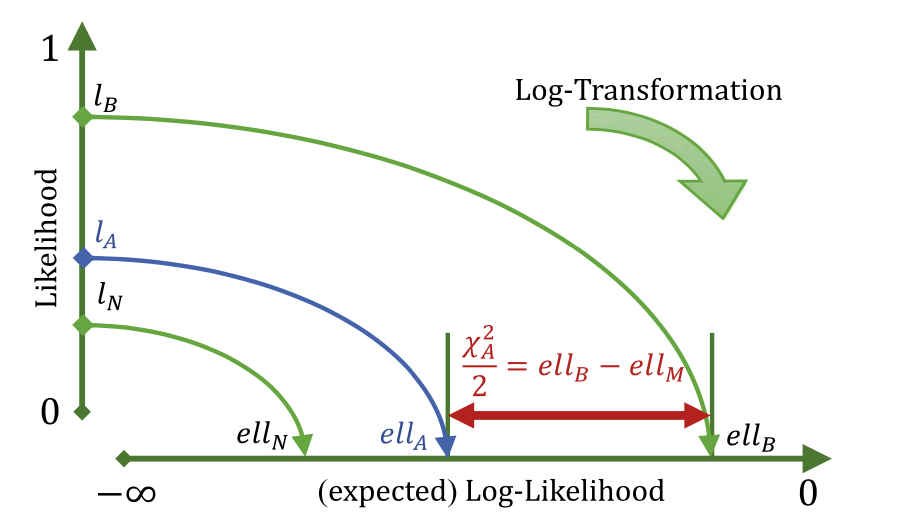
SEMで用いられる標準化指標は，カイ二乗値を変換・標準化して表現したものです。

情報量基準も同様に，カイ二乗値に基づいて考えることができます。

4.2.1 適合度指標の確認
テスト全体の適合度指標にアクセスします。
result$TestFitIndices model_log_like bench_log_like null_log_like model_Chi_sq null_Chi_sq model_df
1 -3890.655 -3560.005 -4350.217 661.2999 1580.424 180
null_df NFI RFI IFI TLI CFI RMSEA AIC
1 195 0.581568 0.5466987 0.6563184 0.6236472 0.6525974 0.07320173 301.2999
CAIC BIC
1 -637.3296 -457.3296項目ごとの適合度指標にアクセスします。
result$ItemFitIndices model_log_like bench_log_like null_log_like model_Chi_sq null_Chi_sq
Item01 -263.5243 -240.1896 -283.3432 46.66936 86.30724
Item02 -252.9135 -235.4364 -278.9486 34.95430 87.02454
Item03 -281.0830 -260.9064 -293.5981 40.35320 65.38341
Item04 -205.8510 -192.0718 -265.9618 27.55846 147.77999
Item05 -232.0722 -206.5372 -247.4032 51.06995 81.73195
Item06 -173.9301 -153.9397 -198.8174 39.98072 89.75530
Item07 -252.0388 -228.3788 -298.3455 47.32008 139.93348
Item08 -313.7538 -293.2252 -338.7888 41.05727 91.12723
Item09 -325.6916 -300.4923 -327.8422 50.39860 54.69970
Item10 -309.4482 -288.1984 -319.8497 42.49979 63.30265
Item11 -250.8358 -224.0855 -299.2653 53.50067 150.35960
Item12 -240.2466 -214.7967 -293.5981 50.89987 157.60288
Item13 -291.8161 -262.0307 -328.3959 59.57086 132.73044
Item14 -224.3296 -204.9528 -273.2123 38.75364 136.51897
Item15 -273.1202 -254.7637 -302.8469 36.71312 96.16648
model_df null_df NFI RFI IFI TLI CFI
Item01 12 13 0.45926485 0.414203591 0.5334323 0.487656724 0.52706775
Item02 12 13 0.59833967 0.564867971 0.6940427 0.664068641 0.68990951
Item03 12 13 0.38282211 0.331390623 0.4688763 0.413631888 0.45873713
Item04 12 13 0.81351697 0.797976715 0.8854142 0.874944352 0.88456402
Item05 12 13 0.37515318 0.323082614 0.4397124 0.384190641 0.43156059
Item06 12 13 0.55455867 0.517438559 0.6401439 0.605076827 0.63545553
Item07 12 13 0.66183876 0.633658655 0.7239184 0.698555346 0.72174340
Item08 12 13 0.54945113 0.511905392 0.6327779 0.597084013 0.62807755
Item09 12 13 0.07863105 0.001850299 0.1007289 0.002427135 0.07916351
Item10 12 13 0.32862541 0.272677525 0.4054929 0.343147136 0.39367428
Item11 12 13 0.64418190 0.614530390 0.7000521 0.672690832 0.69786846
Item12 12 13 0.67703720 0.650123635 0.7328359 0.708570655 0.73098830
Item13 12 13 0.55118916 0.513788260 0.6059746 0.569573968 0.60268366
Item14 12 13 0.71613001 0.692474177 0.7851441 0.765355002 0.78340462
Item15 12 13 0.61823375 0.586419899 0.7063782 0.678084940 0.70284764
RMSEA AIC CAIC BIC
Item01 0.07609078 22.669360 -39.90594 -27.90594
Item02 0.06191433 10.954305 -51.62099 -39.62099
Item03 0.06881136 16.353196 -46.22210 -34.22210
Item04 0.05097326 3.558461 -59.01684 -47.01684
Item05 0.08077566 27.069950 -35.50535 -23.50535
Item06 0.06835787 15.980719 -46.59458 -34.59458
Item07 0.07680154 23.320078 -39.25522 -27.25522
Item08 0.06966049 17.057272 -45.51802 -33.51802
Item09 0.08007866 26.398603 -36.17669 -24.17669
Item10 0.07136865 18.499788 -44.07551 -32.07551
Item11 0.08325046 29.500668 -33.07463 -21.07463
Item12 0.08059965 26.899866 -35.67543 -23.67543
Item13 0.08913117 35.570860 -27.00444 -15.00444
Item14 0.06684217 14.753638 -47.82166 -35.82166
Item15 0.06424256 12.713116 -49.86218 -37.862184.3 可視化（baseグラフィックス）
plot()関数のtype引数で表示する図の種類を選択します。
4.3.1 項目反応関数（IRF / ICC）
plot(result, items = 1, type = "IRF")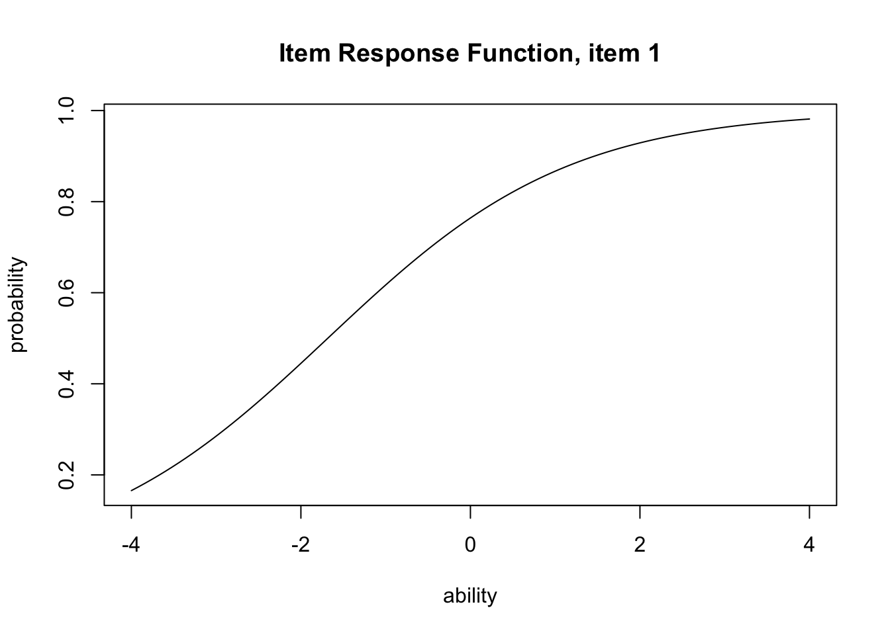
overlay = TRUEで複数項目を重ね描きできます。
plot(result, items = 1:6, type = "IRF", overlay = TRUE)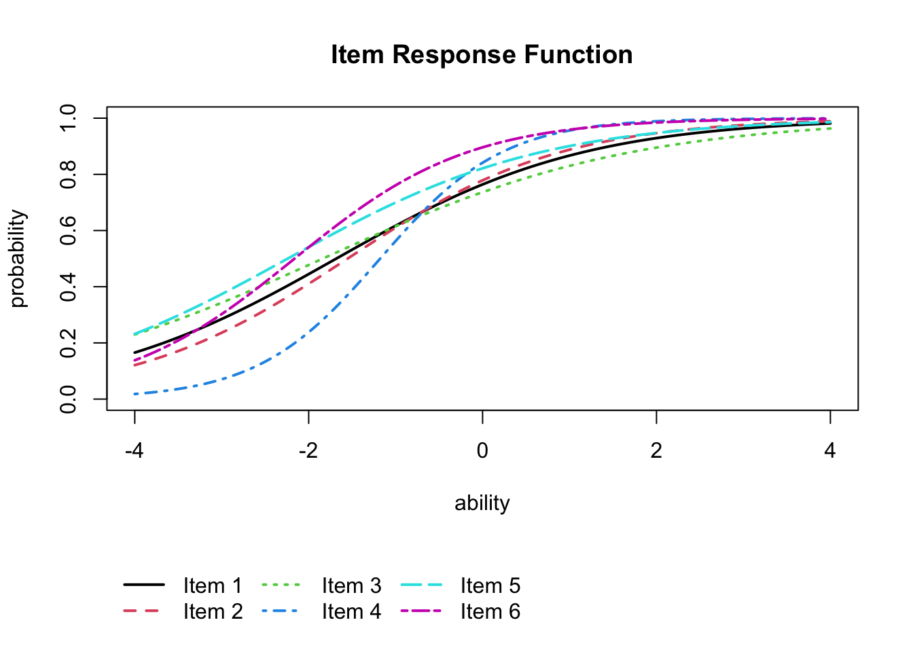
nr（行数）とnc（列数）でレイアウトを指定できます。
plot(result, items = 1:6, type = "IRF", nr = 3, nc = 2)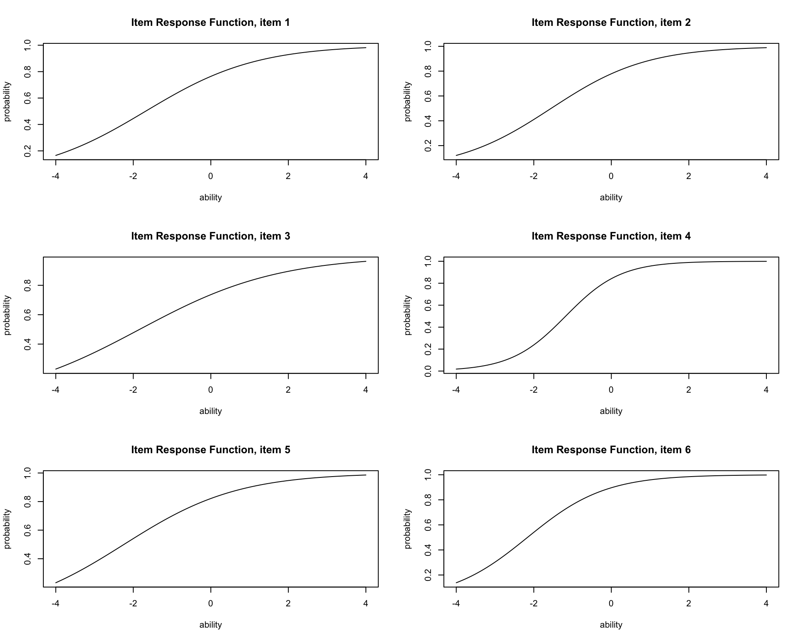
4.3.2 テスト反応関数（TRF）
plot(result, type = "TRF")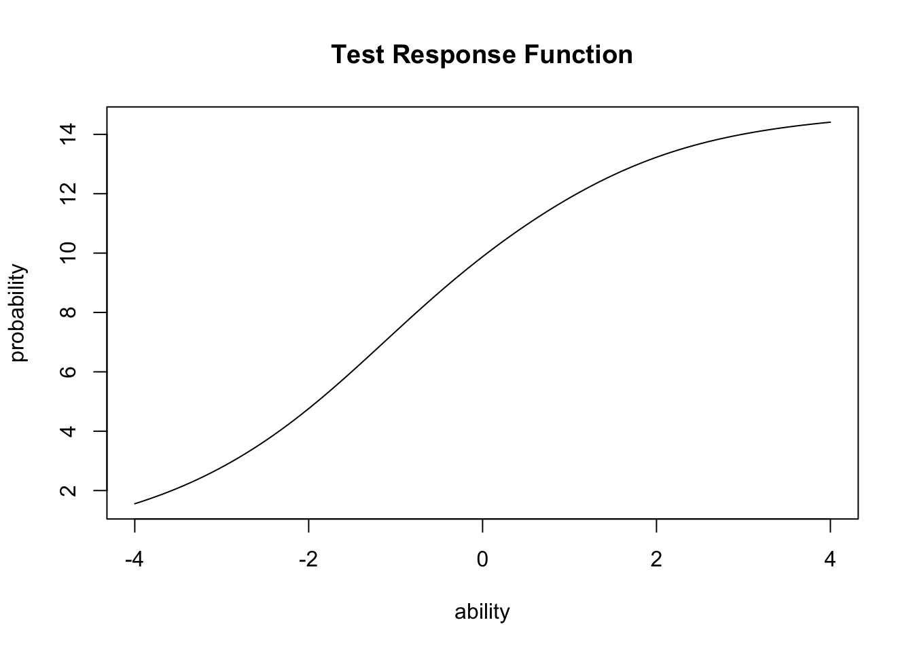
4.3.3 項目情報関数（IIF / IIC）
plot(result, items = 1:15, type = "IIC", overlay = TRUE)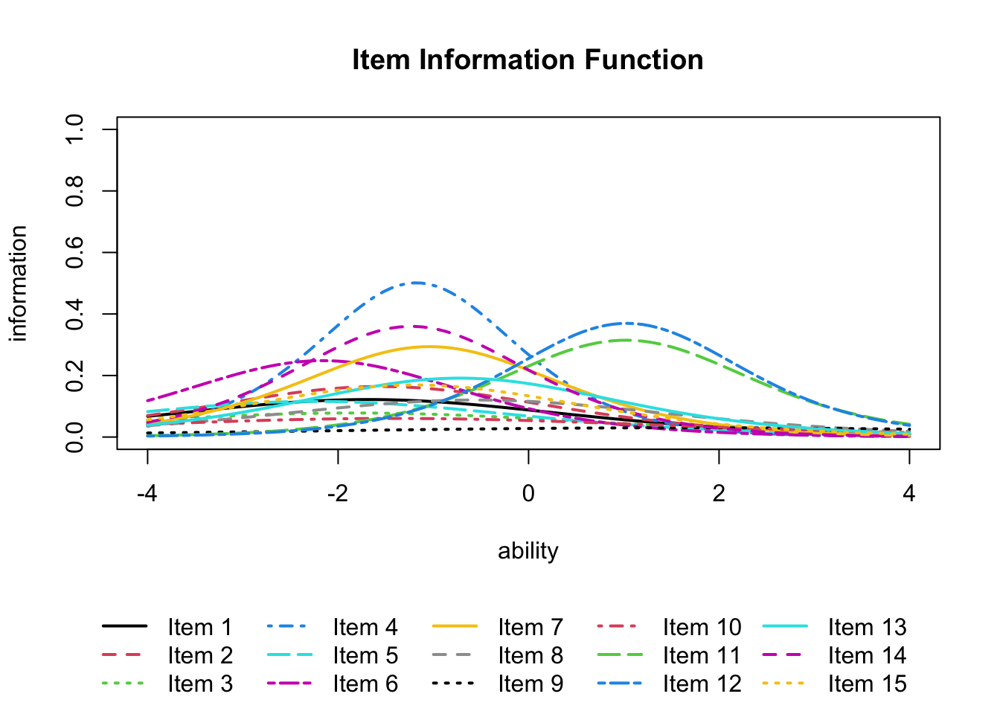
4.3.4 テスト情報関数（TIF / TIC）
plot(result, type = "TIC")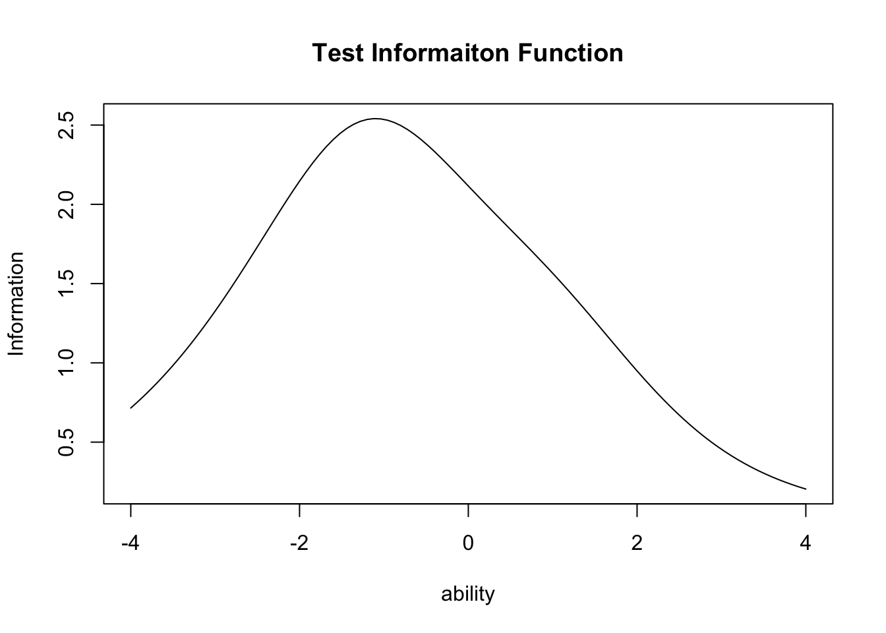
4.4 可視化（ggExametrika）
ggExametrikaパッケージを使うと，ggplot2ベースの図が得られます。
library(ggExametrika)4.4.1 plotICC_gg / plotICC_overlay_gg
plotICC_gg(result, items = 1)[[1]]
plotICC_overlay_gg(result, items = 1:6)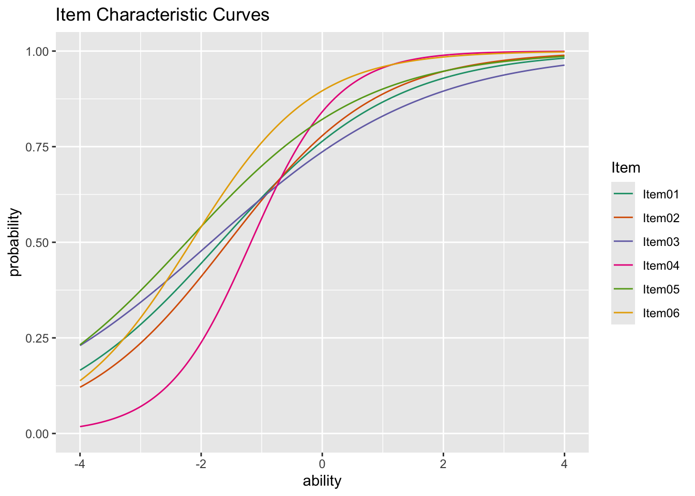
4.4.2 plotTRF_gg
plotTRF_gg(result)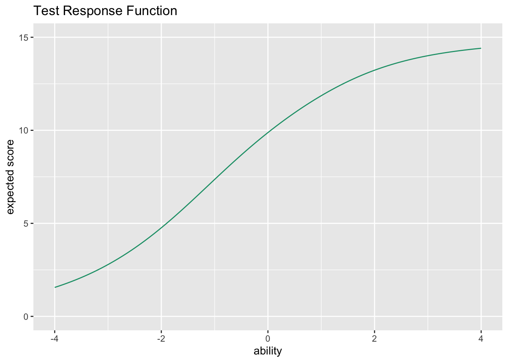
4.4.3 plotIIC_gg / plotIIC_overlay_gg
plotIIC_gg(result, items = 1)[[1]]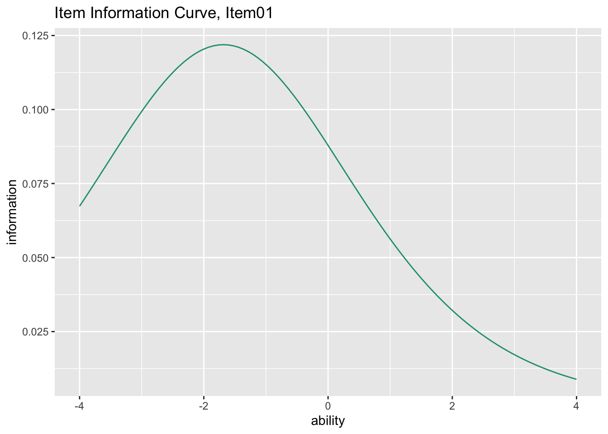
plotIIC_overlay_gg(result, items = 1:6)
4.4.4 plotTIC_gg
plotTIC_gg(result)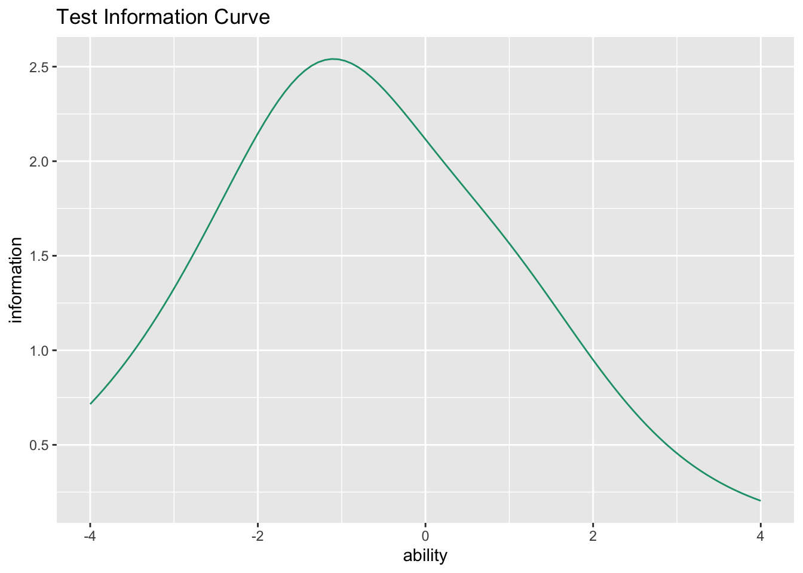
4.5 受検者能力推定
EAP（期待事後）推定値とPSD（事後標準偏差）が出力されます。
result$ability |> head(20) ID EAP PSD
1 Student001 -0.66456783 0.5457047
2 Student002 -0.14853711 0.5626979
3 Student003 0.01362524 0.5699764
4 Student004 0.58775674 0.6012839
5 Student005 -0.97796891 0.5415528
6 Student006 0.85892499 0.6187224
7 Student007 0.05696150 0.5720483
8 Student008 0.04790644 0.5716114
9 Student009 1.23035675 0.6433919
10 Student010 -0.19705221 0.5606753
11 Student011 -0.34067163 0.5551509
12 Student012 -0.51385235 0.5495270
13 Student013 1.05114795 0.6316587
14 Student014 0.81625131 0.6158909
15 Student015 -1.35345911 0.5440716
16 Student016 -1.53285023 0.5476039
17 Student017 0.62954564 0.6038740
18 Student018 -0.96955182 0.5415909
19 Student019 0.73791230 0.6107655
20 Student020 -0.80866473 0.54311594.6 Q3行列
局所独立の仮定が満たされているかどうかを判断する指標です。項目残差間の相関行列であり，値が高すぎると局所独立の仮定に問題がある可能性があります。
result$Q3mat Item01 Item02 Item03 Item04 Item05 Item06 Item07 Item08
Item01 1.0000 -0.0535 -0.08856 -0.13197 0.05521 0.01128 -0.09982 0.0139
Item02 -0.0535 1.0000 0.00440 -0.02750 -0.02981 -0.03641 -0.10196 -0.0638
Item03 -0.0886 0.0044 1.00000 0.00363 0.00902 0.00334 0.01898 -0.0465
Item04 -0.1320 -0.0275 0.00363 1.00000 -0.08089 -0.12016 -0.03221 -0.0855
Item05 0.0552 -0.0298 0.00902 -0.08089 1.00000 -0.06635 -0.04430 -0.0596
Item06 0.0113 -0.0364 0.00334 -0.12016 -0.06635 1.00000 -0.02694 0.0255
Item07 -0.0998 -0.1020 0.01898 -0.03221 -0.04430 -0.02694 1.00000 -0.0245
Item08 0.0139 -0.0638 -0.04653 -0.08547 -0.05961 0.02546 -0.02450 1.0000
Item09 0.0191 -0.0541 -0.03816 -0.05523 -0.08799 -0.07573 -0.01889 -0.0744
Item10 -0.0392 -0.0409 -0.02099 -0.09241 -0.01727 -0.02101 0.00508 -0.0625
Item11 -0.0281 -0.0171 -0.07191 -0.07304 -0.05427 -0.10232 -0.06882 0.0049
Item12 -0.0683 -0.0562 -0.07754 -0.01098 -0.06810 -0.09014 -0.07219 -0.0672
Item13 -0.0342 -0.0820 -0.01490 -0.07015 0.02738 -0.08209 -0.10070 -0.0297
Item14 -0.0209 -0.0496 -0.11632 -0.16292 -0.04666 -0.02432 -0.15965 -0.1019
Item15 -0.0343 -0.0436 -0.07199 -0.03444 -0.05169 0.03602 -0.05857 -0.0781
Item09 Item10 Item11 Item12 Item13 Item14 Item15
Item01 0.01906 -0.03915 -0.02813 -0.0683 -0.03423 -0.02090 -0.0343
Item02 -0.05412 -0.04094 -0.01708 -0.0562 -0.08200 -0.04963 -0.0436
Item03 -0.03816 -0.02099 -0.07191 -0.0775 -0.01490 -0.11632 -0.0720
Item04 -0.05523 -0.09241 -0.07304 -0.0110 -0.07015 -0.16292 -0.0344
Item05 -0.08799 -0.01727 -0.05427 -0.0681 0.02738 -0.04666 -0.0517
Item06 -0.07573 -0.02101 -0.10232 -0.0901 -0.08209 -0.02432 0.0360
Item07 -0.01889 0.00508 -0.06882 -0.0722 -0.10070 -0.15965 -0.0586
Item08 -0.07436 -0.06251 0.00490 -0.0672 -0.02972 -0.10189 -0.0781
Item09 1.00000 -0.10174 -0.05357 0.0772 -0.00977 0.01932 -0.0708
Item10 -0.10174 1.00000 -0.02597 -0.0902 0.01259 0.02296 -0.0529
Item11 -0.05357 -0.02597 1.00000 -0.0630 -0.15170 0.00762 -0.0948
Item12 0.07724 -0.09020 -0.06302 1.0000 -0.09172 -0.05197 -0.0887
Item13 -0.00977 0.01259 -0.15170 -0.0917 1.00000 -0.03881 0.0113
Item14 0.01932 0.02296 0.00762 -0.0520 -0.03881 1.00000 -0.0680
Item15 -0.07085 -0.05290 -0.09481 -0.0887 0.01128 -0.06801 1.00004.7 段階反応モデル（GRM）
Graded Response Model（Samejima, 1969）は，順序カテゴリの反応データに対するIRTモデルです。K段階のカテゴリデータに対して，k以上のカテゴリに反応する確率を2PLモデルのように推定します。
サンプルデータJ5S1000（5項目・1000人の順序データ）を使用します。
dat_grm <- J5S1000
TestStatistics(dat_grm)Test Statistics
value
SampleSize 1000.00000000
TestLength 5.00000000
Median 12.00000000
Max 18.00000000
Min 4.00000000
Range 14.00000000
Mean 11.45700000
SD 2.92107578
Skewness -0.08836075
Kurtosis -0.55776379
Alpha 0.59462241result.GRM <- GRM(dat_grm, verbose = FALSE)
result.GRMItem Parameter
Slope Threshold1 Threshold2 Threshold3
V1 0.928 -1.662 0.0551 1.65
V2 1.234 -0.984 1.1297 NA
V3 0.917 -1.747 -0.0826 1.39
V4 1.479 -0.971 0.8901 NA
V5 0.947 -1.449 0.0302 1.62
Item Fit Indices
model_log_like bench_log_like null_log_like model_Chi_sq null_Chi_sq
V1 -1297.780 -1086.461 -1363.667 422.638 554.411
V2 -947.222 -840.063 -1048.636 214.317 417.145
V3 -1307.044 -1096.756 -1373.799 420.575 554.085
V4 -936.169 -819.597 -1062.099 233.142 485.003
V5 -1308.149 -1096.132 -1377.883 424.033 563.502
model_df null_df NFI RFI IFI TLI CFI RMSEA AIC CAIC BIC
V1 46 45 0.238 0.254 0.259 0.277 0.261 0.091 330.638 58.881 104.881
V2 31 30 0.486 0.503 0.525 0.542 0.526 0.077 152.317 -30.823 0.177
V3 46 45 0.241 0.257 0.263 0.280 0.264 0.090 328.575 56.819 102.819
V4 31 30 0.519 0.535 0.555 0.570 0.556 0.081 171.142 -11.998 19.002
V5 46 45 0.248 0.264 0.270 0.287 0.271 0.091 332.033 60.277 106.277
Model Fit Indices
value
model_log_like -5796.363
bench_log_like -4939.010
null_log_like -6226.083
model_Chi_sq 1714.706
null_Chi_sq 2574.146
model_df 200.000
null_df 195.000
NFI 0.334
RFI 0.351
IFI 0.362
TLI 0.379
CFI 0.363
RMSEA 0.087
AIC 1314.706
CAIC 133.155
BIC 333.1554.7.1 GRMの可視化（baseグラフィックス）
plot(result.GRM, type = "IRF", items = 2)
plot(result.GRM, type = "IRF", items = c(1, 3, 4, 5), nc = 2, nr = 2)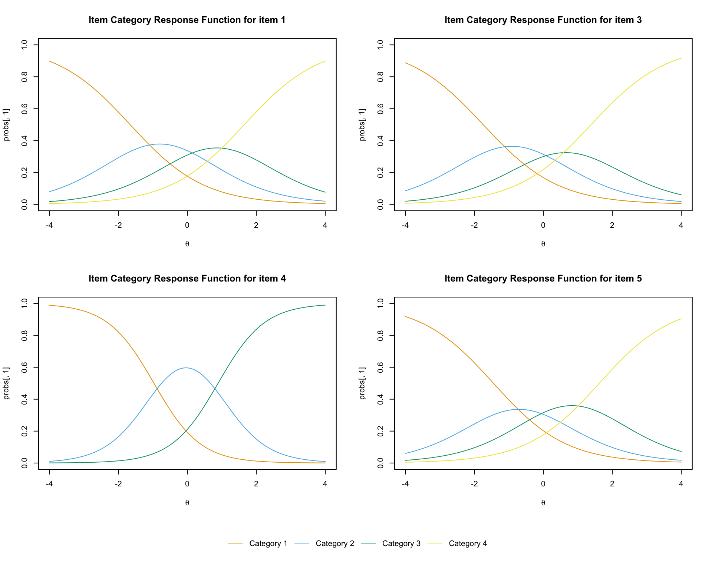
plot(result.GRM, type = "IIF", nr = 2, nc = 2)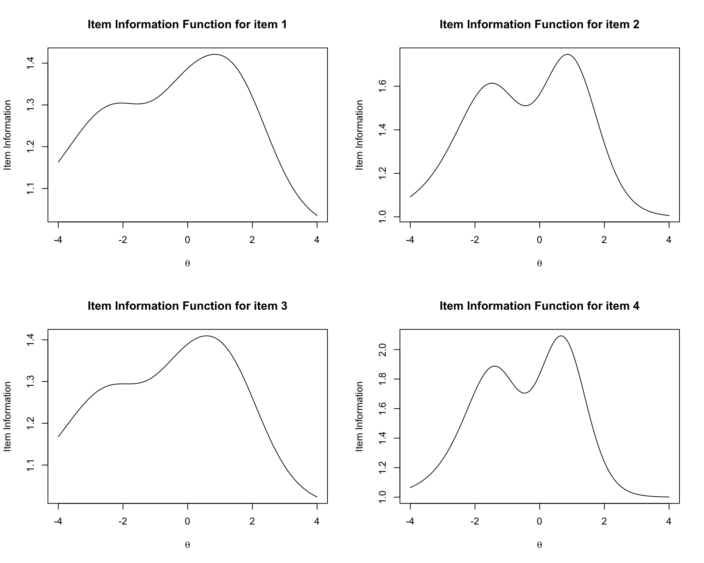
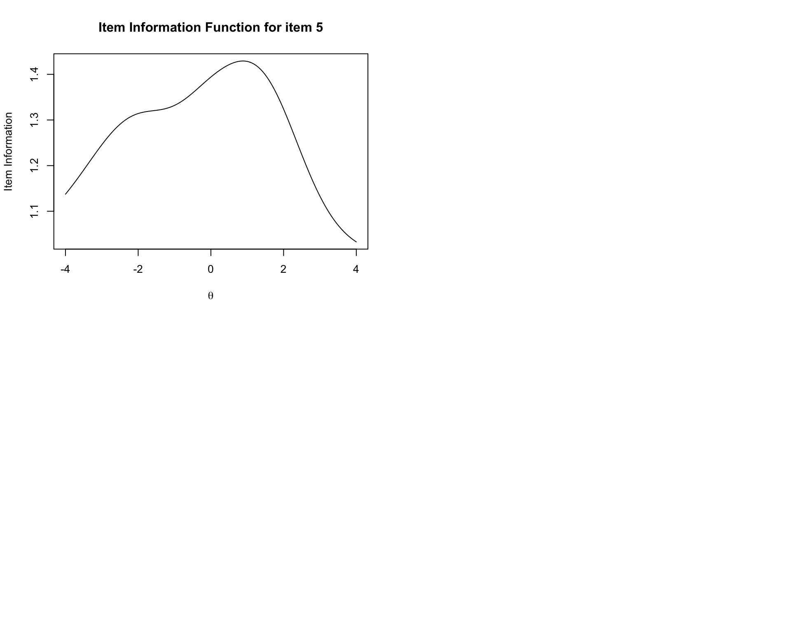
plot(result.GRM, type = "TIF")
4.7.2 GRMの可視化（ggExametrika）
plotICRF_gg(result.GRM, items = 1)[[1]]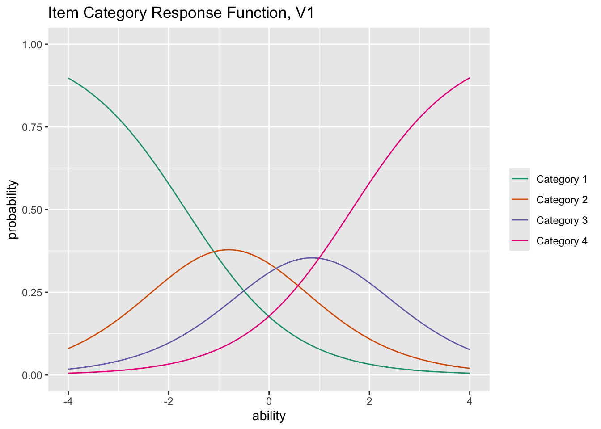
plotTIC_gg(result.GRM)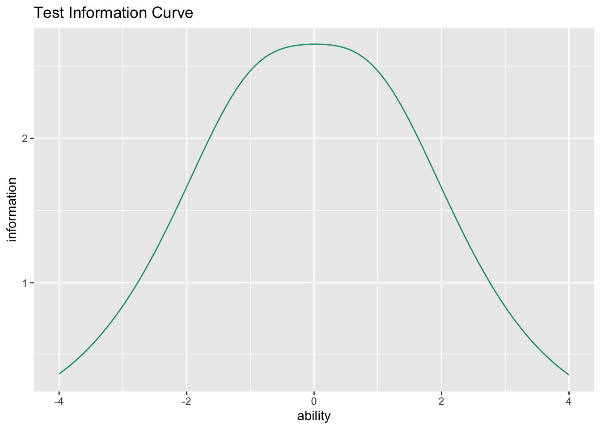
4.8 補助関数
exametrikaには，IRTモデルの計算に用いる補助関数も公開されています。
# ロジスティックモデルの確率
# ggExametrikaがマスクするため exametrika:: で呼び出す
exametrika::LogisticModel(a = 1, b = 0, c = 0, d = 1, theta = 0)[1] 0.5# 2PLMの項目情報関数
exametrika::IIF2PLM(a = 1.5, b = 0.5, theta = 0)[1] 0.4902637# 3PLMの項目情報関数
exametrika::IIF3PLM(a = 1.5, b = 0.5, c = 0.2, theta = 0)[1] 0.2755452# GRMの反応確率
exametrika::grm_prob(theta = 0, a = 1.5, b = c(-1, 0, 1))[1] 0.1824255 0.3175745 0.3175745 0.1824255# GRMの項目情報関数
exametrika::grm_iif(theta = 0, a = 1.5, b = c(-1, 0, 1))[1] 2.008454.9 コラム：態度測定論
- 社会的態度は社会心理学の分野で考えられてきた連続的潜在変数です
- サーストンの考えた測定方法（等現間隔法）を使って測定する一次元モデルです
- リッカートの方法はサーストン法の簡易版として出てきた態度モデルです
- 昨今は「心の測定」「心理学的連続体」「心理尺度の妥当性」が問題になっています
- 心理尺度（リッカート法）は一朝一夕に作れるものではありません
- 心理尺度は領域・方法・標準化など，使用法によく注意して利用しましょう
GRMは正規分布する連続的潜在変数\(\theta\)を仮定し，数値が高くなるとより上位のカテゴリに反応しやすくなるモデルです。リッカート法のIRT版とも言え，反応カテゴリに順序性を仮定した因子分析と数学的に等価です。カテゴリ反応で多因子モデルの場合は，mirtパッケージ（Multidimensional IRT）やlavaanパッケージ（Latent Variable Analysis）で推定しましょう。